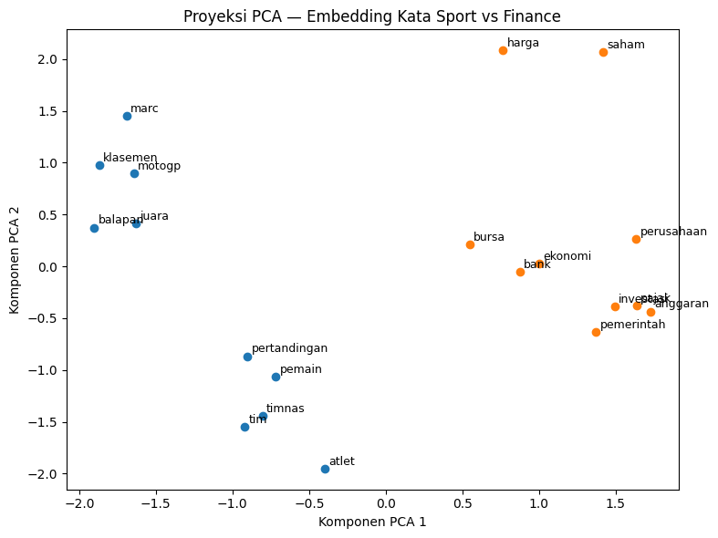

Word Embedding#
Versi lebih lengkap dari latihan sebelumnya. Kalau sebelumnya cuma 3
kalimat (korpus terlalu kecil untuk melihat pola semantik yang nyata),
di sini seluruh 200 artikel (dataset_berita_detik.csv) dipecah
jadi kalimat dan dipakai sebagai korpus pelatihan Word2Vec.
Sekilas cara kerja skip-gram
Skip-gram membalik logika “tebak kata dari konteks”. Untuk setiap
kata pusat (center word) dalam sebuah window, model dilatih
menebak kata-kata di sekitarnya (context words). Contoh kalimat
"marc memenangi balapan utama" dengan window=2 dan kata pusat
balapan, model dilatih membuat pasangan:
Semakin sering dua kata muncul berdekatan di seluruh korpus, semakin dekat pula posisi vektor keduanya di ruang berdimensi tinggi setelah dilatih. Ini sebabnya ukuran korpus sangat menentukan kualitas: 3 kalimat tidak cukup memberi sinyal “kata A dan B sering berdekatan”, sedangkan ribuan kalimat dari 200 artikel baru mulai menunjukkan pola yang masuk akal.
Alur notebook ini
Membangun korpus dari seluruh dataset (bukan 3 kalimat manual)
Preprocessing: tokenisasi, stopword removal, filter kalimat pendek
Statistik vocabulary sebelum training
Melatih
Word2Vecskip-gram sambil memantau loss per epochMelihat efek
min_countterhadap ukuran vocabulary akhirVisualisasi embedding 2D dengan PCA
Eksplorasi kemiripan semantik antar kata nyata di dataset
Instalasi & Import#
%pip install gensim pandas matplotlib scikit-learn -q
import re
import numpy as np
import pandas as pd
import matplotlib.pyplot as plt
from collections import Counter
from gensim.models import Word2Vec
from gensim.models.callbacks import CallbackAny2Vec
from sklearn.decomposition import PCA
print("Library siap dipakai.")
Note: you may need to restart the kernel to use updated packages.
Library siap dipakai.
Membangun Korpus#
Setiap artikel di isi_berita dipecah menjadi kalimat dengan regex
pemisah ./!/? diikuti spasi. Hasilnya digabung jadi satu korpus
besar, bukan dipilih manual seperti latihan sebelumnya.
Dari 200 artikel (100 sport + 100 finance), total didapat 4.389 kalimat, dengan rata-rata 15,5 kata per kalimat (median 14). Korpus sebesar ini jauh lebih representatif dibanding 3 kalimat untuk menangkap pola kedekatan antar kata.
df = pd.read_csv("dataset_berita_detik.csv")
df["isi_berita"] = df["isi_berita"].astype(str)
def pisah_kalimat(teks: str):
return re.split(r"(?<=[.!?])\s+", teks)
semua_kalimat = []
for teks in df["isi_berita"]:
semua_kalimat.extend(pisah_kalimat(teks))
panjang_kata = [len(k.split()) for k in semua_kalimat]
print("Total kalimat mentah :", len(semua_kalimat))
print("Rata-rata kata/kalimat :", round(np.mean(panjang_kata), 2))
print("Median kata/kalimat :", int(np.median(panjang_kata)))
print("Kalimat terlalu pendek (<4 kata):",
sum(1 for p in panjang_kata if p < 4))
Total kalimat mentah : 4389
Rata-rata kata/kalimat : 15.52
Median kata/kalimat : 14
Kalimat terlalu pendek (<4 kata): 138
Preprocessing#
Tiga operasi dilakukan sebelum korpus dipakai melatih model:
Tokenisasi — lowercase, buang semua karakter selain huruf (angka & simbol dibuang total; untuk latihan embedding ini tidak dipertahankan seperti pada notebook preprocessing sebelumnya).
Stopword removal — kata fungsi (
yang,di,ke,dan, dst) dibuang. Alasannya: kata fungsi muncul di hampir semua kalimat tanpa membawa makna topik, sehingga kalau dibiarkan ia akan “mencemari” window konteks — kata konten penting jadi kalah dominan olehyang/di/danyang serba hadir di mana-mana.Filter kalimat pendek — kalimat dengan token tersisa kurang dari 4 kata dibuang, karena dengan
window=5nanti, kalimat yang terlalu pendek tidak memberi pasangan (center, context) yang cukup untuk dipelajari.
STOPWORDS = set("""
yang di ke dari pada untuk dengan dan atau ini itu adalah akan telah
sudah juga tidak ada dalam oleh sebagai karena agar jika maka saat
tersebut mereka dia nya kami kita sebuah para lebih dapat bisa
""".split())
def tokenisasi(teks: str):
teks = teks.lower()
teks = re.sub(r"[^a-z\s]", " ", teks)
return teks.split()
korpus_token = []
for kalimat in semua_kalimat:
token = [t for t in tokenisasi(
kalimat) if t not in STOPWORDS and len(t) > 2]
if len(token) >= 4:
korpus_token.append(token)
print("Kalimat terpakai setelah filter :", len(korpus_token))
total_token = sum(len(k) for k in korpus_token)
print("Total token :", total_token)
Kalimat terpakai setelah filter : 4109
Total token : 51445
Statistik Vocabulary#
Sebelum model dilatih, ada baiknya melihat dulu seberapa besar
vocabulary mentahnya dan kata apa saja yang paling sering muncul.
Ini membantu menentukan parameter min_count yang masuk akal di
fase berikutnya — kalau min_count terlalu rendah, kata yang cuma
muncul sekali (sering kali typo atau nama yang terlalu spesifik)
ikut dilatih padahal datanya tidak cukup untuk menghasilkan vektor
yang bermakna.
semua_token_flat = [t for kal in korpus_token for t in kal]
frekuensi = Counter(semua_token_flat)
print("Jumlah kata unik (sebelum min_count) :", len(frekuensi))
print("\n--- 15 Kata Paling Sering ---")
for kata, jumlah in frekuensi.most_common(15):
print(f"{kata:<15} {jumlah}")
Jumlah kata unik (sebelum min_count) : 7094
--- 15 Kata Paling Sering ---
artikel 396
indonesia 360
menjadi 340
jakarta 288
saya 233
anda 209
tahun 209
menyukai 197
disimpan 197
motogp 182
hingga 175
marquez 160
satu 160
emas 159
atlet 156
Training Word2Vec Skip-gram#
Parameter yang dipakai, beserta alasannya:
Parameter |
Nilai |
Alasan |
|---|---|---|
|
|
Arsitektur skip-gram: prediksi konteks dari kata pusat |
|
|
Ukuran vektor tiap kata — cukup besar untuk menangkap nuansa, tapi tidak berlebihan untuk korpus ~51 ribu token |
|
|
Jumlah kata konteks kiri/kanan yang diperhatikan per kata pusat |
|
|
Kata yang muncul kurang dari 5 kali dibuang dari vocabulary — datanya terlalu sedikit untuk dilatih dengan andal |
|
|
Negative sampling: tiap update, model juga dilatih membedakan 5 kata acak yang bukan konteks sebenarnya, supaya training lebih cepat dibanding menghitung probabilitas ke seluruh vocabulary |
|
|
Korpus dilewati 20 kali selama training |
Loss dipantau tiap epoch lewat CallbackAny2Vec supaya terlihat
apakah training konvergen (loss menurun lalu melandai) atau malah
tidak stabil.
class PemantauLoss(CallbackAny2Vec):
"""Mencetak loss training di akhir tiap epoch."""
def __init__(self):
self.epoch = 0
self.loss_sebelumnya = 0
def on_epoch_end(self, model):
loss_sekarang = model.get_latest_training_loss()
loss_epoch_ini = loss_sekarang - self.loss_sebelumnya
print(f"Epoch {self.epoch:>2} | loss epoch ini: {loss_epoch_ini:,.1f}")
self.loss_sebelumnya = loss_sekarang
self.epoch += 1
model = Word2Vec(
sentences=korpus_token,
vector_size=100,
window=5,
min_count=5,
sg=1, # skip-gram
negative=5,
epochs=20,
seed=42,
compute_loss=True,
callbacks=[PemantauLoss()],
)
print("\nTraining selesai.")
Epoch 0 | loss epoch ini: 279,533.0
Epoch 1 | loss epoch ini: 203,438.0
Epoch 2 | loss epoch ini: 189,425.1
Epoch 3 | loss epoch ini: 179,538.6
Epoch 4 | loss epoch ini: 181,484.2
Epoch 5 | loss epoch ini: 172,904.4
Epoch 6 | loss epoch ini: 168,181.0
Epoch 7 | loss epoch ini: 163,515.9
Epoch 8 | loss epoch ini: 156,874.0
Epoch 9 | loss epoch ini: 155,042.6
Epoch 10 | loss epoch ini: 150,829.0
Epoch 11 | loss epoch ini: 147,113.4
Epoch 12 | loss epoch ini: 140,864.5
Epoch 13 | loss epoch ini: 132,616.8
Epoch 14 | loss epoch ini: 129,844.0
Epoch 15 | loss epoch ini: 129,789.8
Epoch 16 | loss epoch ini: 128,440.5
Epoch 17 | loss epoch ini: 127,260.2
Epoch 18 | loss epoch ini: 132,372.0
Epoch 19 | loss epoch ini: 125,443.2
Training selesai.
Ukuran Vocabulary#
Dari 7.094 kata unik sebelum filter, hanya kata yang muncul minimal
5 kali yang masuk vocabulary model. Sebagai contoh konkret: kata
"rupiah" cuma muncul 4 kali di seluruh korpus — tepat di bawah
ambang min_count=5 — sehingga ia tidak punya vektor sama
sekali di model ini. Ini ilustrasi nyata kenapa min_count penting:
kata langka tidak dibuang sembarangan, tapi karena datanya memang
tidak cukup untuk menghasilkan vektor yang bisa dipercaya.
print("Kemiripan 'marc' vs 'balapan' :",
model.wv.similarity("marc", "balapan"))
print("Kemiripan 'marc' vs 'poin' :", model.wv.similarity("marc", "poin"))
print("\nKata paling mirip dengan 'marc':")
print(model.wv.most_similar("marc", topn=3))
Kemiripan 'marc' vs 'balapan' : 0.4972136
Kemiripan 'marc' vs 'poin' : 0.56544316
Kata paling mirip dengan 'marc':
[('puncak', 0.8060017824172974), ('rival', 0.7863250970840454), ('alex', 0.7730768918991089)]
Visualisasi dengan PCA#
Vektor berdimensi 100 tidak bisa dilihat langsung, jadi direduksi ke 2 dimensi dengan PCA. Dipilih sejumlah kata dari domain sport dan finance (berdasarkan kata yang paling sering muncul di masing-masing label pada notebook preprocessing sebelumnya), lalu diplot dengan warna berbeda. Kalau skip-gram bekerja dengan baik, kata-kata dari domain yang sama cenderung mengelompok.
kata_sport = ["marc", "balapan", "motogp", "klasemen", "pemain",
"pertandingan", "timnas", "atlet", "juara", "tim"]
kata_finance = ["saham", "bursa", "ekonomi", "investasi", "pemerintah",
"anggaran", "perusahaan", "bank", "pajak", "harga"]
kata_terpilih = [k for k in kata_sport + kata_finance if k in model.wv]
warna = ["tab:blue" if k in kata_sport else "tab:orange" for k in kata_terpilih]
vektor = np.array([model.wv[k] for k in kata_terpilih])
hasil_pca = PCA(n_components=2, random_state=42).fit_transform(vektor)
plt.figure(figsize=(8, 6))
for (x, y), kata, c in zip(hasil_pca, kata_terpilih, warna):
plt.scatter(x, y, color=c)
plt.annotate(kata, (x, y), fontsize=9, xytext=(
3, 3), textcoords="offset points")
plt.title("Proyeksi PCA — Embedding Kata Sport vs Finance")
plt.xlabel("Komponen PCA 1")
plt.ylabel("Komponen PCA 2")
plt.tight_layout()
plt.show()

Eksplorasi Kemiripan Semantik#
Beberapa kata kunci dicek kata-kata yang paling mirip menurutnya
model (most_similar), untuk melihat apakah hasilnya masuk akal
secara konteks berita.
kata_kueri = ["marc", "saham", "bursa", "timnas", "pemerintah"]
for kata in kata_kueri:
if kata not in model.wv:
print(f"'{kata}' tidak ada di vocabulary\n")
continue
print(f"Kata paling mirip dengan '{kata}':")
for mirip, skor in model.wv.most_similar(kata, topn=5):
print(f" {mirip:<15} skor={skor:.3f}")
print()
Kata paling mirip dengan 'marc':
puncak skor=0.806
rival skor=0.786
alex skor=0.773
criville skor=0.769
marquez skor=0.767
Kata paling mirip dengan 'saham':
buy skor=0.822
rekomendasi skor=0.803
cmry skor=0.787
pergerakan skor=0.764
dpum skor=0.759
Kata paling mirip dengan 'bursa':
timah skor=0.815
diperdagangkan skor=0.787
komoditas skor=0.771
cenderung skor=0.726
gabungan skor=0.695
Kata paling mirip dengan 'timnas':
bertolak skor=0.914
jelang skor=0.910
zaki skor=0.871
partner skor=0.865
pool skor=0.853
Kata paling mirip dengan 'pemerintah':
rapbn skor=0.681
pembahasan skor=0.670
berkoordinasi skor=0.664
belanja skor=0.624
temuan skor=0.620
Dari Vektor Kata ke Vektor Dokumen#
Model Word2Vec menghasilkan vektor per kata, bukan per
dokumen (artikel). Supaya bisa dipakai klasifikasi sport vs
finance, setiap artikel perlu direpresentasikan sebagai satu vektor
tunggal.
Pendekatan yang dipakai: average pooling. Vektor dokumen dihitung sebagai rata-rata vektor seluruh kata penyusunnya yang ada di vocabulary model:
vektor_dokumen = rata-rata( vektor(kata) untuk setiap kata di dokumen )
Ini pendekatan paling sederhana (ada alternatif lebih canggih seperti
weighted average pakai TF-IDF, atau model Doc2Vec yang melatih
vektor dokumen langsung), tapi cukup untuk melihat apakah embedding
kata saja sudah membawa sinyal yang berguna untuk klasifikasi.
Token dokumen di sini dihitung dari seluruh isi artikel (bukan
per kalimat seperti saat training Word2Vec), memakai fungsi
tokenisasi dan stopword removal yang sama dari Fase 2.
def token_dokumen(teks: str):
return [t for t in tokenisasi(teks) if t not in STOPWORDS and len(t) > 2]
def vektor_dokumen(tokens, model):
"""Rata-rata vektor kata yang ada di vocabulary; vektor nol jika tak ada yang cocok."""
vektor_kata = [model.wv[t] for t in tokens if t in model.wv]
if not vektor_kata:
return np.zeros(model.vector_size)
return np.mean(vektor_kata, axis=0)
X = np.array([
vektor_dokumen(token_dokumen(teks), model)
for teks in df["isi_berita"]
])
y = df["label"].values
print("Jumlah dokumen :", X.shape[0])
print("Dimensi vektor dokumen:", X.shape[1])
Jumlah dokumen : 200
Dimensi vektor dokumen: 100
Split Train-Test#
Data dibagi 80:20 dengan stratify=y supaya proporsi sport:finance
tetap seimbang di kedua bagian (bukan kebetulan satu bagian lebih
banyak sport, misalnya).
from sklearn.model_selection import train_test_split
X_train, X_test, y_train, y_test = train_test_split(
X, y, test_size=0.2, random_state=42, stratify=y
)
print("Data latih :", X_train.shape[0], "dokumen")
print("Data uji :", X_test.shape[0], "dokumen")
print("Distribusi label data uji:", pd.Series(y_test).value_counts().to_dict())
Data latih : 160 dokumen
Data uji : 40 dokumen
Distribusi label data uji: {'finance': 20, 'sport': 20}
Training Model Klasifikasi#
Dua model dicoba, sesuai dengan yang biasa dipakai sebelumnya:
Gaussian Naive Bayes — dipilih varian Gaussian (bukan Multinomial seperti biasa dipakai untuk TF-IDF) karena vektor Word2Vec berisi angka desimal termasuk negatif, sementara
MultinomialNBmengasumsikan fitur berupa hitungan non-negatif (cocok untuk TF-IDF, tidak cocok untuk embedding).K-Nearest Neighbors (k=5) — mengklasifikasikan dokumen baru berdasarkan mayoritas label dari 5 dokumen tetangga terdekat di ruang vektor 100 dimensi.
Kedua model dilatih dengan data dan parameter yang sama supaya adil dibandingkan.
from sklearn.naive_bayes import GaussianNB
from sklearn.neighbors import KNeighborsClassifier
from sklearn.metrics import accuracy_score, classification_report, confusion_matrix
model_klasifikasi = {
"Gaussian Naive Bayes": GaussianNB(),
"KNN (k=5)": KNeighborsClassifier(n_neighbors=5),
}
hasil = {}
for nama, clf in model_klasifikasi.items():
clf.fit(X_train, y_train)
prediksi = clf.predict(X_test)
akurasi = accuracy_score(y_test, prediksi)
hasil[nama] = {"model": clf, "prediksi": prediksi, "akurasi": akurasi}
print(f"=== {nama} ===")
print(f"Akurasi: {akurasi:.3f}")
print("Confusion matrix:")
print(confusion_matrix(y_test, prediksi, labels=["sport", "finance"]))
print(classification_report(y_test, prediksi))
print()
=== Gaussian Naive Bayes ===
Akurasi: 0.950
Confusion matrix:
[[18 2]
[ 0 20]]
precision recall f1-score support
finance 0.91 1.00 0.95 20
sport 1.00 0.90 0.95 20
accuracy 0.95 40
macro avg 0.95 0.95 0.95 40
weighted avg 0.95 0.95 0.95 40
=== KNN (k=5) ===
Akurasi: 0.975
Confusion matrix:
[[20 0]
[ 1 19]]
precision recall f1-score support
finance 1.00 0.95 0.97 20
sport 0.95 1.00 0.98 20
accuracy 0.97 40
macro avg 0.98 0.97 0.97 40
weighted avg 0.98 0.97 0.97 40
Memilih Model Terbaik#
Hasil pengujian pada data uji (40 dokumen, 20 sport + 20 finance):
Model |
Akurasi |
Kesalahan |
|---|---|---|
Gaussian Naive Bayes |
0,95 |
2 dokumen sport salah diprediksi finance |
KNN (k=5) |
0,975 |
1 dokumen finance salah diprediksi sport |
KNN (k=5) sedikit lebih unggul. Ini masuk akal secara konsep: dengan embedding Word2Vec, dokumen yang topiknya mirip memang cenderung berdekatan secara jarak di ruang vektor (itulah tujuan skip-gram pada Fase 4-7 sebelumnya) — dan KNN secara langsung memanfaatkan kedekatan jarak itu untuk klasifikasi. Naive Bayes di sisi lain mengasumsikan tiap dimensi vektor independen dan mengikuti distribusi Gaussian, asumsi yang tidak sepenuhnya cocok untuk embedding hasil skip-gram.
nama_terbaik = max(hasil, key=lambda k: hasil[k]["akurasi"])
model_terbaik = hasil[nama_terbaik]["model"]
print(
f"Model terpilih: {nama_terbaik} (akurasi {hasil[nama_terbaik]['akurasi']:.3f})")
# Tampilkan beberapa contoh prediksi yang salah untuk inspeksi
prediksi_terbaik = hasil[nama_terbaik]["prediksi"]
salah = np.where(prediksi_terbaik != y_test)[0]
print(f"\nJumlah prediksi salah: {len(salah)} dari {len(y_test)}")
for i in salah:
print(f" Label asli: {y_test[i]:<10} | Prediksi: {prediksi_terbaik[i]}")
Model terpilih: KNN (k=5) (akurasi 0.975)
Jumlah prediksi salah: 1 dari 40
Label asli: finance | Prediksi: sport
Kesimpulan#
Tahap |
Hasil |
|---|---|
Representasi kata |
Skip-gram Word2Vec, 2.150 kata dalam vocabulary |
Representasi dokumen |
Rata-rata vektor kata per artikel (dimensi 100) |
Model terbaik |
KNN (k=5), akurasi 97,5% pada data uji |
Kesalahan |
1 dari 40 dokumen uji |
Jalur lengkap yang sudah ditempuh: teks mentah → korpus kalimat → tokenisasi & stopword removal → embedding kata (skip-gram) → rata-rata jadi vektor dokumen → klasifikasi sport vs finance.
Catatan untuk pengembangan lanjut:
Akurasi setinggi ini wajar dicurigai karena topik sport dan finance memang sangat berbeda secara kosakata (jarang tumpang tindih kata kunci) — perbedaan ini akan jauh lebih sulit kalau dua labelnya lebih mirip (misal “sepak bola” vs “e-sport”).
Average pooling membuang informasi urutan kata sepenuhnya. Kalau ingin representasi dokumen yang lebih kaya, bisa dicoba
Doc2Vec(gensim.models.Doc2Vec) yang melatih vektor dokumen secara langsung, bukan menurunkannya dari rata-rata vektor kata.Untuk pembanding yang adil dengan notebook klasifikasi berbasis TF-IDF sebelumnya, model yang sama (Naive Bayes & KNN) bisa dijalankan di atas kedua representasi (TF-IDF vs Word2Vec) lalu akurasinya dibandingkan head-to-head.